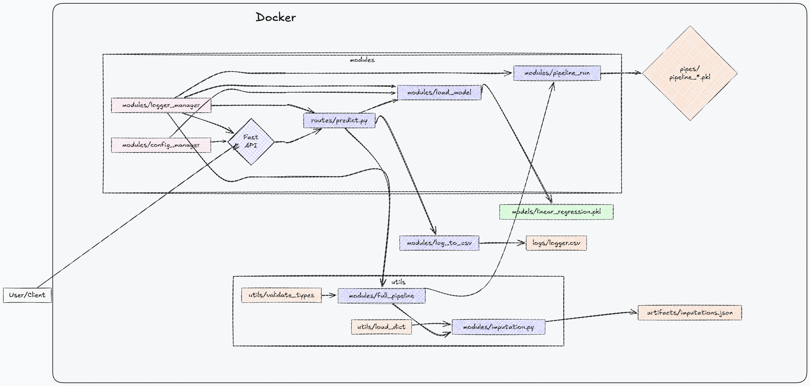

Project Initialization Guide
This guide outlines the setup and usage of Docker and Docker Compose for managing and deploying your FastAPI application. Additionally, it includes explanations of the provided Makefile which contains common commands for building and managing the Docker environment.

Dockerfile
The Dockerfile is used to create a Docker container for your FastAPI application. Below is a breakdown of each command:
FROM python:3.11-slim
WORKDIR /app
COPY . .
# upgrade and install dependencies
RUN apt-get update && apt-get install -y --no-install-recommends \
build-essential \
libpq-dev \
gcc \
&& apt-get clean && rm -rf /var/lib/apt/lists/*
RUN pip install --no-cache-dir -r requirements/requirements.txt
ENV HOST="0.0.0.0" \
PORT="8000" \
CONFIG_PATH="../config"
EXPOSE ${PORT}
# run the app
CMD ["uvicorn", "api.main:app", "--host", "${HOST}", "--port", "${PORT}"]
Explanation
- Base Image: Uses the slim variant of Python 3.11.
- Working Directory: Sets the working directory inside the container to
/app. - Copy Files: Copies all files from the current directory to
/app. - Install Dependencies: Updates package lists and installs dependencies required for building Python packages.
- Python Dependencies: Installs Python dependencies from
requirements.txt. - Environment Variables: Sets environment variables for the host, port, and config path.
- Expose Port: Exposes port 8000 for the application.
- Run Command: Runs the Uvicorn server, loading the FastAPI application from
api.main:app.
docker-compose.yml
The docker-compose.yml file is used to manage multi-container Docker applications.
services:
app:
container_name: HDI-Challenge
image: jarb29/hdi-challenge:latest
build:
context: .
dockerfile: Dockerfile
ports:
- "8000:8000"
environment:
HOST: "0.0.0.0"
PORT: "8000"
command: >
uvicorn api.main:app --host ${HOST:-0.0.0.0} --port ${PORT:-8000}
Explanation
- Service Definition: Defines a service named
app. - Container Name: Names the container
HDI-Challenge. - Image: Specifies the Docker image to use.
- Build Context: Defines the build context and Dockerfile location.
- Ports: Maps port
8000on the host to port8000in the container. - Environment Variables: Sets environment variables for the application.
- Command: Specifies the command to run the Uvicorn server.
Makefile
The Makefile provides convenient shortcuts for building, deploying, and stopping the Docker containers.
build: ## Build the Docker image
docker-compose up --build
deploy: build ## Deploy the app to the server
docker-compose up -d
deploy-stop: ## Stop the app from the server
docker-compose down
Explanation
- build:
- Command:
docker-compose up --build -
Description: Builds the Docker image and starts the container.
-
deploy:
- Command:
docker-compose up -d -
Description: First runs the
buildtarget, then deploys the app in detached mode. -
deploy-stop:
- Command:
docker-compose down - Description: Stops and removes containers, networks, and volumes associated with the Docker Compose project.
Usage
Building the Docker Image
Run the following command to build the Docker image:
make build
Deploying the Application
Run the following command to deploy the application:
make deploy
Stopping the Application
Run the following command to stop the application:
make deploy-stop
Testing the Application
After deploying the application, you can test it by accessing the provided URL.
Default Access
By default, the application is accessible on:
HOST=0.0.0.0
PORT=8000
Testing URL
To test the application, open a web browser or use a tool like curl or Postman to visit: For example, using curl:
curl http://127.0.0.1:8000
You should get a response from your FastAPI application confirming that the server is running correctly.
Dataset for Prediction
The dataset named claims_dataset.csv contains the information that your API will use for predictions.
Dataset Columns
claim_id: Número de identificación del siniestro.marca_vehiculo: Marca del vehículo siniestrado.antiguedad_vehiculo: Antiguedad del vehículo en años desde su año de fabricación hasta el año del siniestro.tipo_poliza: Identificador del tipo de póliza asociada al vehículo siniestrado.taller: Identificador del taller donde se realizarán las reparaciones del vehículo.partes_a_reparar: Número de partes del vehículo que necesitan reparación.partes_a_reemplazar: Número de partes del vehículo que deben ser reemplazadas.
Example API Request using curl
Here is an example of how to send a request to your API using curl with the dataset:
Example Dataset
claim_id|marca_vehiculo|antiguedad_vehiculo|tipo_poliza|taller|partes_a_reparar|partes_a_reemplazar 561205|ferd|1|1|4|3|2
JSON Format
{
"claim_id": 561205,
"marca_vehiculo": "ferd",
"antiguedad_vehiculo": 1,
"tipo_poliza": 1,
"taller": 4,
"partes_a_reparar": 3,
"partes_a_reemplazar": 2
}
curl Command
curl -X POST http://127.0.0.1:8000/api/v1/predict/ \
-H "Content-Type: application/json" \
-d '{
"claim_id": 561205,
"marca_vehiculo": "ferd",
"antiguedad_vehiculo": 1,
"tipo_poliza": 1,
"taller": 4,
"partes_a_reparar": 3,
"partes_a_reemplazar": 2
}'
The command sends a POST request to your FastAPI application running at http://127.0.0.1:8000/api/v1/predict/ with the specified JSON data. The response should be: {"prediccion": 4.384084317938598}